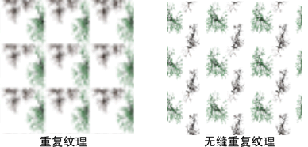
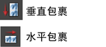
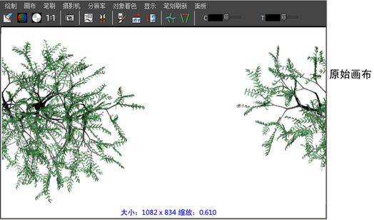
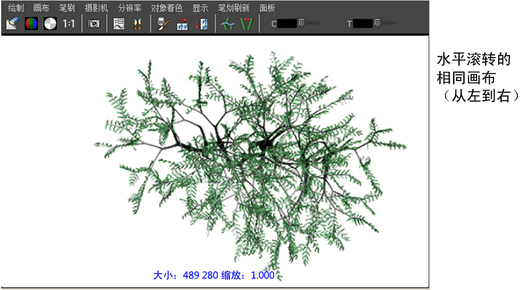
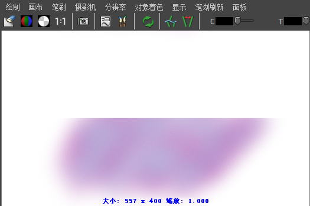

重复纹理是通过在栅格中平铺或重复图像创建的。无缝重复纹理是一种无法看到每个分片的边界的纹理，因为图像在每个分片边连续匹配（就像在纸张的边缘对齐墙纸图案一样）。

可以使用折回功能在“Paint Effects”中创建无缝重复纹理。使用折回功能可以跨画布的边进行绘制并让笔划在相对的边上继续，就好像将画布折回到一个圆柱体中并在边处接合一样。可以在水平方向上、垂直方向上或同时在两个方向上折回画布。
创建无缝重复纹理
- 创建新的文件纹理。有关详细信息，请参见文件纹理节点。
- 使用鼠标中键，将新文件纹理从“Hypershade”拖动到画布上。将打开“Paint Effects 新图像”(Paint Effects New Image)窗口。
- 在“图像名称”(Image name)框中键入新图像的名称，或者单击文件夹图标并选择某个现有纹理。默认情况下，会将该图像存储在当前项目的 sourceimages 目录中。
- 如有必要，请设定画布大小。对于纹理，通常使用方形画布（例如，256 X 256 像素或 512 X 512）。
- 单击“背景色”(Background color)框以打开“颜色选择器”(Color Chooser)，为图像选择背景色，然后单击“接受”(Accept)。有关使用“颜色选择器”(Color Chooser)的信息，请参见颜色选择器。
- 单击“应用纹理”(Apply Texture)。
- 执行下列操作之一：
- 在“建模”(Modeling)菜单集中，打开“Paint Effects 全局参数”(Paint Effects Globals)窗口（），并确保启用适当的“包裹”(Wrap)选项。启用“H 向折回”(Wrap H)可在水平方向上折回画布，启用“V 向折回”(Wrap V)可在垂直方向上折回画布。有关信息，请参见 Paint Effects 全局参数选项。
- 在画布工具栏上，单击适当的折回按钮。

- 在画布上绘制。有关信息，请参见在画布上绘制。在折回的边上绘制时，笔刷笔划会在对边上继续。
- 在“属性编辑器”(Attribute Editor)中打开文件纹理，单击 place2dTexture 节点选项卡，然后展开“2D 纹理放置属性”(2d Texture Placement Attributes)。
- 根据是在 U 方向、V 方向还是同时在两个方向上在覆盖区域外部复制纹理，启用“U 向折回”(Wrap U)和“V 向折回”(Wrap V)。
- 在“UV 向重复”(Repeat UV)字段中，键入希望在覆盖区域内沿 U 和/或 V 参数化曲面方向映射的纹理贴图的副本数。
纹理将在其着色器所附加到的任何对象上无缝折回。
侧滚画布
如果折回画布，可能希望显示边接合的区域。可以使用侧滚功能完成该操作。侧滚功能会侧滚画布，就好像将它包裹为一个圆柱体一样，这样图像可以连续地从左到右或从上到下移动。


如果不使用包裹功能，但希望校正在画布的边处创建的任何接缝，该功能也非常有用。在以下示例中，在垂直方向上（从上到下）将画布侧滚了 50%。现在可以使用喷笔轻松地校正接缝了。

侧滚画布
- 选择“画布 > 侧滚”(Canvas > Roll)，然后选择下列菜单项之一：
- 50、25 水平(25 horizontal)
-
从左到右侧滚画布，距离为画布宽度的 50% 或 25%。
-
-25% 水平(-25% horizontal)
-
从右到左侧滚画布，距离为画布宽度的 25%。
-
50, 25 垂直(50, 25 vertical)
-
从下到上侧滚画布，距离为画布高度的 50% 或 25%。
-
-25% 垂直(-25% vertical)
-
从上到下侧滚画布，距离为画布高度的 25%。